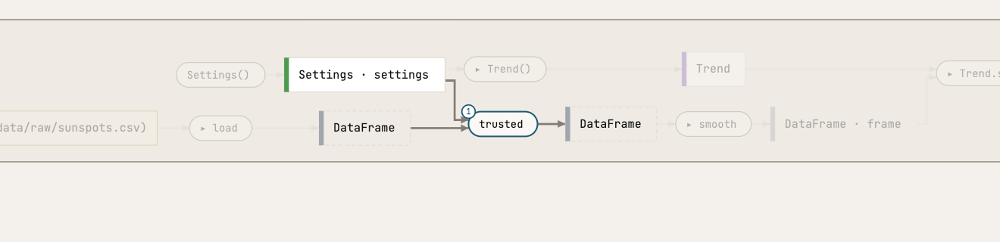
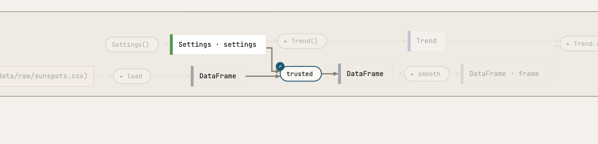
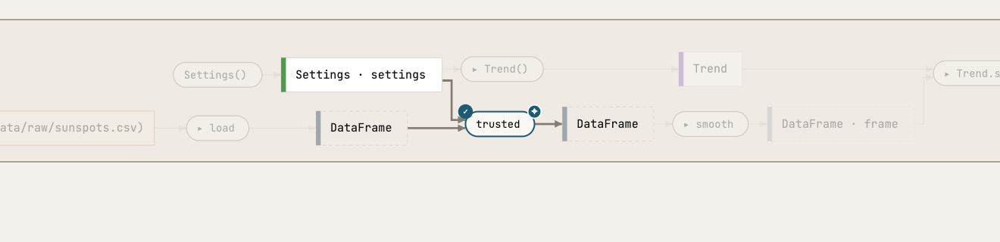

Working with your agent
Every picture is a screenshot of atlas serve after what the person or the agent did; every text is what a tool answered.
Two commits, one picture
Beside the picture atlas serve has a history: the commit graph, and any two commits drawn as one picture, with what the second added, removed and changed marked. Here the two commits of the pipeline: the second leaves out the months with too few observations. series gains one step, cli changes.

Pointing, both ways
The person and the agent share one view. look takes the person's page to a view and points at a box: “here, this one”. shown goes the other way: what the person has open and the box they clicked, in the names the agent can use.

The page of `atlas serve` goes there when it next asks, within a second while it is open.
View: {"route":"sunspots.cli.run"}
Selected: sunspots.series.trusted
17 boxes:
Settings() (sunspots.settings.Settings)
download (sunspots.download.download)
load (sunspots.series.load)
trusted (sunspots.series.trusted)
smooth (sunspots.series.smooth)
Trend() (sunspots.plot.Trend)
…
A note on a box
Alt-click a box or a line and write what you see or do not understand. The agent reads the note where it works, answers it by a fix or by explaining, and resolves it with the commit that fixed it. Atlas is no chat: the note stays on the box, a ring while it is open, a ✓ once it is resolved.



Note 1 on trusted (sunspots.series.trusted), written at 59b48f1 in the view {"route":"sunspots.cli.run"}:
Why a minimum of 1? What happens to the months with no observations?
Its place: http://127.0.0.1:54431/#v=%7B%22route%22%3A%22sunspots.cli.run%22%7D&at=sunspots.series.trusted


Note 1 on trusted is resolved; the page marks it so while it is served. Tell the person you work with what you did.
What the agent says that the code does not
A condition, a step's reason, why a place stands where it does: annotate puts the agent's own words on a box or a line. A ✦ marks it; hover it for the words. They are the agent's statements, apart from what Atlas traces.


The page of `atlas serve` shows 1 annotation within a few seconds.
Show the change, do not describe it
To ask “shall I do this?” the agent shows the files the change would write, as sketch code. The page draws the working tree and the vision as one picture: what the vision adds is marked, and A, A ∪ B and B switch between them. The vision tells what it does to the routes and to the findings.

Envisioned: Keep the smoothed months in a file. The page of `atlas serve` draws it beside the working tree within a second; `look` points at what you mean.
working tree..vision
+ CLI · run-archived
+ place reads data/raw/sunspots.csv
+ place writes figures/sunspots.png
findings raised
nothing · src/sunspots/series.py:37 Archive.write gives nothing back, and Atlas sees no change and no place it reaches
Decide it: the vision becomes a prophecy
When the person says yes, prophetize writes the vision into the tree as prophecy: sketch code, marked as not built yet, with what it supersedes. It leaves the files for the person to commit. Atlas draws the prophecy beside what exists, in its own colour with a dotted border, and the distance between the two is the list of what is left.
Decided: Keep the smoothed months in a file. Written: src/sunspots/cli.py, src/sunspots/series.py. Marked as prophecies: sunspots.cli.run_archived, sunspots.series.Archive. The files are left for you to commit; the vision is retracted.
diff --git a/src/sunspots/cli.py b/src/sunspots/cli.py
index f83251b..a67a80f 100644
--- a/src/sunspots/cli.py
+++ b/src/sunspots/cli.py
@@ -1,12 +1,13 @@
"""The command line: a run names the source and the files, and hands them down."""
+from sunspots import prophecy
from pathlib import Path
import typer
from sunspots.download import download
from sunspots.plot import Trend
-from sunspots.series import load, smooth, trusted
+from sunspots.series import Archive, load, smooth, trusted
from sunspots.settings import Settings
SILSO = "https://www.sidc.be/SILSO/DATA/SN_m_tot_V2.0.csv"
@@ -24,3 +25,13 @@ def run(raw: Path = RAW, figure: Path = FIGURE, months: int = 13, minimum: int =
download(SILSO, raw)
frame = smooth(trusted(load(raw), settings.minimum), settings.months)
Trend(settings).save(frame, figure)
+
+
+@app.command()
+@prophecy(supersedes="sunspots.cli.run")
+def run_archived(raw: Path = RAW, figure: Path = FIGURE, archive: Path = Path("data/smoothed.csv"), months: int = 13) -> None:
+ """Like `run`, and keep the smoothed months in a file."""
+ settings = Settings(months=months)
+ frame = smooth(trusted(load(raw), settings.minimum), settings.months)
+ Archive(archive).write(frame)
+ Trend(settings).save(frame, figure)
diff --git a/src/sunspots/series.py b/src/sunspots/series.py
index d6b3068..f6eb129 100644
--- a/src/sunspots/series.py
+++ b/src/sunspots/series.py
@@ -4,6 +4,7 @@ SILSO's file has no header; its columns are separated by semicolons, and a month
observation has `-1` for its mean.
"""
+from sunspots import prophecy
from pathlib import Path
import pandas as pd
@@ -27,3 +28,15 @@ def trusted(frame: pd.DataFrame, minimum: int) -> pd.DataFrame:
def smooth(frame: pd.DataFrame, months: int) -> pd.DataFrame:
"""`frame` with a `smoothed` column: the mean over `months` months, centred on each."""
return frame.assign(smoothed=frame["mean"].rolling(months, center=True).mean())
+
+
+@prophecy
+class Archive:
+ """The smoothed months kept as a file: what goes in comes out."""
+
+ def __init__(self, path: Path) -> None: ...
+
+ def write(self, frame: pd.DataFrame) -> None: ...
+
+ def read(self) -> pd.DataFrame:
…

sunspots · 0 questions ──────────────────────────────────────────────────────────── 0 questions nothing to ask: doors, sums, overrides, places, changes, gives, choices, nothing, layers, lens, prophecy
sunspots · 4 prophecies
src/sunspots/cli.py:32 run_archived supersedes `sunspots.cli.run`
1 body to write
src/sunspots/series.py:34 Archive
3 bodies to write
src/sunspots/series.py:46 Format
0 bodies to write · sealed on raoulg/atlas#19 (closed: the seal can be broken)
src/sunspots/series.py:51 Compression
0 bodies to write · sealed on raoulg/atlas#33 (open)
sunspots · 2 sealed, 1 to break src/sunspots/series.py:46 Format sealed on raoulg/atlas#19 (closed: the seal can be broken) A database is a file: the directory made for it serves its data src/sunspots/series.py:51 Compression sealed on raoulg/atlas#33 (open) Showcase of the interaction: history, look, notes, annotations, vision and prophecy, drawn from a real subject
Seals broken: sunspots.series.Format. The files are left for you to commit; sketch the shape now.
diff --git a/src/sunspots/series.py b/src/sunspots/series.py
index d6b3068..f81717f 100644
--- a/src/sunspots/series.py
+++ b/src/sunspots/series.py
@@ -4,6 +4,7 @@ SILSO's file has no header; its columns are separated by semicolons, and a month
observation has `-1` for its mean.
"""
+from sunspots import prophecy
from pathlib import Path
import pandas as pd
@@ -27,3 +28,25 @@ def trusted(frame: pd.DataFrame, minimum: int) -> pd.DataFrame:
def smooth(frame: pd.DataFrame, months: int) -> pd.DataFrame:
"""`frame` with a `smoothed` column: the mean over `months` months, centred on each."""
return frame.assign(smoothed=frame["mean"].rolling(months, center=True).mean())
+
+
+@prophecy
+class Archive:
+ """The smoothed months kept as a file: what goes in comes out."""
+
+ def __init__(self, path: Path) -> None: ...
+
+ def write(self, frame: pd.DataFrame) -> None: ...
+
+ def read(self) -> pd.DataFrame:
+ raise NotImplementedError
+
+
+@prophecy()
+class Format:
+ """The file the archive keeps its months in: what it is waits on a question."""
+
+
+@prophecy(sealed="raoulg/atlas#33")
+class Compression:
+ """Whether the archive is compressed."""